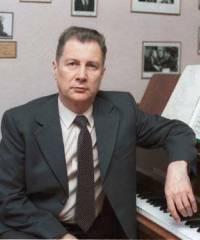

Андрей Эшпай, композитор
Андрей Яковлевич Эшпай - композитор, пианист, педагог - родился 15 мая 1925 года в волжском городе Козьмодемьянске (сейчас республика Марий Эл). Воевал в Великую Отечественную войну 1941-1945 годов. "Единая гармония - изменяющийся мир... В многоголосье планеты должен звучать голос каждого народа, а это возможно, если художник - писатель, живописец, композитор - выражает свои мысли и чувства на родном для него образном языке. Чем художник национальнее, тем он индивидуальней." Андрей Эшпай.
БиографияОтец композитора - Яков Андреевич Эшпай, один из основоположников марийской профессиональной музыки, своим подвижническим трудом привил сыну любовь к народному искусству. По словам А. Эшпая, "отец был значительным, глубоким, умным и тактичным, очень скромным - подлинным музыкантом, способным на самоотречение. Великолепный знаток фольклора, он словно отошел как автор в сторону, увидев свой долг в том, чтобы передать людям красоту и величие народной мысли. Он понял, что нельзя прилаживать марийскую пентатонику... к любой другой стройной и самостоятельной, но чуждой народному искусству системе. По работам отца я всегда могу узнать подлинник".
Мать Андрея Эшпая, Валентина Константиновна, учительница русского языка и литературы, знаток родных русских песен, а также марийских, чувашских, мордовских, которые с юности пела в учительском хоре.Она - племянница композитора А.Н.Тогаева, жившего в Мариинском Посаде (Чувашия), в доме которого и познакомились будущие родители А.Эшпая.
Детство. А. Эшпай с детства впитал фольклор разных народов Поволжья, весь лирико-эпический строй сурового угорского края.
В 1928 году семья Эшпаев переехала в Москву. Отец учился в аспирантуре Московской консерватории, мать - в педагогическом институте. Начались музыкальные занятия и у их старшего сына Валентина. Трехлетнему Андрею тоже не терпелось поиграть на загадочном пианино, но его занятиям мешала ужасная непоседливость. Каждое лето братья проводили на Волге, в Мариинском Посаде, в семье Тогаевых. Хозяин дома, где "даже воздух пропитан музыкой" (как сказал уже взрослый Андрей), Анатолий Николаевич Тогаев, композитор, автор многих задушевных песен, создатель нескольких хоровых коллективов, учитель пения, играл на гуслях и скрипке. Он был дружен со знаменитым Митрофаном Пятницким, который подарил ему сборник собственных песен с надписью "Родной душе - родные звуки". К Тогаевым "на огонек" стекались все, кому дорого искусство, - от народного певца до маститого художника. Здесь бывали Мариан Коваль, Виктор Белый, венгр Ференц Сабо. А заводилой вечеров выступала жена Тогаева - Александра Васильевна, которая даже после выхода на пенсию продолжала играть на любительской сцене. В каждый свой приезд сюда непременными участниками импровизированных концертов становились и родители А.Эшпая. Ловко срезанная ветка в руках Якова Эшпая превращалась в дудочку, рожок или свирель, а скрипка под его смычком умела петь вселенской болью.
Удивительная жизнь и многогранная деятельность отца, притягательная сила просторов Волги, добрые и открытые сердца окружающих людей не могли не оказать благотворного влияния на чуткие души подростков. Не потому ли Андрей Эшпай так часто любит возвращаться в страну своего детства?
Редкую щедрость души ощутил А.Эшпай и в своем первом педагоге в музыкальной школе имени Гнесиных - в Валерии Владимировне Листовой. Их знакомство
состоялось, когда Андрею было всего 4 года. Но в этом ребенке, в этом маленьком человечке она сумела разглядеть задатки настоящего, большого музыканта.
Валерия Владимировна пробудила в питомце фантазию мысли и звуков, интерес к урокам музыки, помогла ему найти живой отклик на природу, искусство и "планету
людей". Познания В.Листовой в различных сферах художнической деятельности были неистощимы. Ее воздействие - педагога-мыслителя, наделенного чувством
Высшей Справедливости, - во многом способствовало становлению Эшпая как творческой личности.Большое внимание Валерия Владимировна уделяла развитию
технических навыков. "У меня были ученики, которые любили играть гаммы, не отрывая рук от клавиатуры; так и ползли по полутонам, играя гаммы одну за другой: до
мажор, до-диез мажор, ре мажор и т.д. Предварительно они изучали, конечно, каждую из них с большой тщательностью, и только один ученик не учил гамм и
играл их без всякой подготовки. Он говорил мне: "Зачем я буду учить гаммы, когда я чувствую их под пальцами с каждой клавиши в терцию, сексту, дециму". Он обладал удивительным слухом. Это был Андрей Эшпай". (Из книги Е.Макуренковой "О педагогике В.В.Листовой". - М., 1971, стр.73).
Из воспоминаний А.Эшпая о Листовой: "Валерия Владимировна - воплощение ума, благородства, тонкого юмора, аристократична и проста. Мы - все ее ученики - были влюблены в нее".
Школьные годы Андрея были окружены заботой и вниманием многих наставников. Среди них знаменитые сестры Гнесины - Елена, Ольга и Елизавета Фабиановны. Война. В роковом 1941 году музыкальную школу имени Гнесиных по классу фортепиано В.Листовой окончили два ярких ученика - Андрей Эшпай и Станислав Нейгауз...
Учебу в 10-м классе средней школы Эшпай продолжил в Мариинском Посаде, в эвакуации. Андрей рвался добровольцем на фронт, но его время тогда еще не пришло.
Война стала особой трагической темой жизни и творчества композитора - он потерял старшего брата, памяти которого посвящена прекрасная песня "Москвичи" ("Сережка с Малой Бронной"), друзей. Во взводе разведки Эшпай участвовал в освобождении Варшавы, в Берлинской операции. После войны. Прерванные войной занятия музыкой возобновились в Московской консерватории, в которой Эшпай учился по классу композиции у Н. Ракова, Н. Мясковского, Е. Голубева и фортепиано - у В. Софроницкого. Аспирантуру он заканчивает под руководством А. Хачатуряна в 1956 г. В это время были созданы "Симфонические танцы на марийские темы" (1951), "Венгерские напевы" для скрипки с оркестром (1952), Первый фортепианный концерт (1954, 2-я ред. - 1987), Первый скрипичный концерт (1956). Эти произведения принесли широкую известность композитору, открыли основные темы его творчества, творчески преломили заветы его учителей. Характерно, что прививший ему, по словам композитора, "вкус к масштабности" Хачатурян во многом воздействовал на представления Эшпая о концертном жанре. Особенно показателен Первый скрипичный концерт с его темпераментной взрывчатостью, свежестью, непосредственностью в изъявлении чувств, открытым обращением к народной и жанрово-бытовой лексике. С Хачатуряном сближает Эшпая и любовь к стилю М. Равеля, особенно ярко сказавшаяся в фортепианном творчестве (Первый фортепианный концерт, Первая фортепианная сонатина - 1948). Гармоничность, свежесть, эмоциональная заразительность и колористическая щедрость также объединяют этих мастеров. К крупным сочинениям той поры относятся "Симфонические танцы" на марийские темы" (1951). Две из них подлинно народные, третья - оригинальная, но близкая по складу национальному мелосу. Эта подвижная тема передана автором малому кларнету (на фоне динамичного движения струнных). Она попала в книгу Д.Рогаль-Левицкого "Современный оркестр" (М., 1956) как удачный пример использования данного вида кларнета. Характер каждой из выбранных тем рельефный: это архаический танец, шуточный напев, лирическая песня. Разработка тем в первой части произведения близка глинкинским вариациям, во второй - изысканно
полифонична. Глубина изобретательности, с которой Эшпай выстраивает взаимодействие тем, приводит к их лирической трансформации и ослепительному блеску
финала. Это сочинение вошло в репертуар многих оркестров. Среди интерпретаторов-дирижеров был такой поразительный музыкант, как С.Самосуд.
Общность музыкальных корней марийского и венгерского народов объясняет интерес композитора к мелодиям Венгрии. В "Венгерских напевах" для скрипки с оркестром (1953) в рапсодической форме объединено шесть разнохарактерных мелодий, получающих исключительно темпераментное и виртуозное воплощение.
Любопытна история создания "Венгерских напевов". Выбрав несколько народных песен, А.Эшпай решает на их основе написать вокальный цикл и включить его в
программу государственного экзамена в консерватории. Исполнитель был найден - венгр А.Варга. Он стажировался тогда в Московской консерватории. Но вот до экзамена осталось два-три дня. В квартире сокурсника Андрея скрипача Эдуарда Грача раздается телефонный звонок: "Эдик, спасай! Варга заболел. Твоя скрипка будет звучать не хуже голоса!" Вместе они сыграли пьесы, после чего Эшпай сказал: "Все, никакие это не песни! Это музыка для скрипки с оркестром. Я допишу еще три номера с развернутым tutti, и в таком виде мы покажем весь цикл" (из беседы автора очерка с Э.Грачом). Так родились "Венгерские напевы".
Впервые они были исполнены 24 января 1953 года в Концертном зале имени Чайковского Государственным симфоническим оркестром СССР под управлением К.Иванова, солист - Э.Грач. В 1955 году "Напевы" были удостоены первой премии на конкурсе молодых композиторов V Всемирного фестиваля молодежи и
студентов в Варшаве.
За год до окончания консерватории, в 1952 году, Андрей Эшпай был принят в Союз композиторов СССР и стал одним из самых молодых его членов.
В 1954 году А.Эшпай обращается к новому для себя жанру в сфере симфонической музыки - он пишет Первый фортепианный концерт ("Памяти Мориса Равеля"). Связь Концерта с именем великого французского композитора не ограничивается одним лишь посвящением. Эшпай строит композицию Концерта на сквозном проведении в каждой из трех частей короткой мелодии из оперы "Дитя и волшебство" Равеля. Она модифицирована, но легко узнаваема. Контрастно сочетая ее с марийским мелосом, композитор создает их органический эмоциональный сплав. Приемы изложения в Концерте близки импрессионистической стилистике К.Дебюсси и М.Равеля, их изумительной тонкости в передаче чувств и токкатному накалу страстей С.Прокофьева. Первое исполнение Фортепианного концерта состоялось 5 декабря 1954 года в Большом зале консерватории. Государственным симфоническим оркестром СССР дирижировал Е.Светланов. Солисткой выступила Т.Николаева. Андрей Эшпай до сих пор с восторгом вспоминает, как Татьяна Петровна, взяв ноты, через три дня проиграла ему весь трехчастный труднейший Концерт наизусть! Это феноменально! Неописуемо!На премьере она играла одухотворенно, с истинным блеском, вызвав самое горячее одобрение публики. 25 октября 1956 года в Колонном зале Дома союзов состоялась премьера Первого концерта для скрипки с оркестром (с посвящением Э. Грачу) Андрея Эшпая. Исполнителями были Большой симфонический оркестр Всесоюзного радио, дирижер Е.Светланов, солист Э.Грач.Богатая насыщенность мелодиями фольклорного происхождения в Фортепианном концерте уступила в Скрипичном место оригинальному тематическому материалу. Созданные воображением автора темы оказались необычайно интересными, а наличие в них ряда особенностей, свойственных марийско-венгерским мелодиям (синкопированность, кварто-квинтовость), только усиливало воздействие. Всегда строгий и сдержанный декан теоретико-композиторского факультета консерватории профессор С.С.Богатырев после премьеры поздравил Эшпая и с удивлением произнес: "Подумать только - квинта. Всего-навсего квинта. И как звучит!" (Имелась в виду побочная партия первой части Концерта.) На конкурсе молодых композиторов VI Всемирного фестиваля молодежи и студентов в Москве (1957) Скрипичный концерт Эшпая был удостоен первой премии.
Шли годы. Накапливался духовный опыт, осмысливалось пережитое, а боль от утраты старшего брата Валентина и гибели друзей не утихала. Вот как рассказывает Эшпай о создании песни "Москвичи" ("Сережка с Малой Бронной", 1957): "Это просто поразительно! Все, о чем говорится в песне "Сережка с Малой Бронной", было у меня в жизни. Поэт-фронтовик Женя Винокуров, конечно, этих подробностей не знал. Марк Бернес принес мне готовые стихи и предложил написать песню. Я прочел стихи и был буквально ошеломлен.
В полях за Вислой сонной
лежат в земле сырой
(Земля там сырая, форсирование Вислы - мои военные дороги в Польше.)
Сережка с Малой Бронной
И Витька с Моховой.
(Наша семья жила на Бронной, только не на Малой, а на Большой, старший брат Валя не вернулся с войны.)
А где-то в людном мире
Который год подряд
Одни в пустой квартире
Их матери не спят.
(И моя мама не спала ночами.)
Свет лампы воспаленный
Пылает над Москвой
В окне на Малой Бронной,
В окне на Моховой.
(И лампа пылала все ночи напролет.)
Друзьям не встать. В округе
Без них идет кино.
Девчонки, их подруги,
Все замужем давно.
(Точнее не придумаешь).
Картину, подобную моим ощущениям, я наблюдал не раз во время концертов. Помню наши выступления с Иосифом Кобзоном в Казани - люди плакали, потому что это
коснулось души каждого. Замечательные стихи поэта".Замечательная, конечно, и музыка, благодаря которой песня стала одной из самых любимых в народе. На небывалом подъеме композитор создал Первую (1959) и Вторую (1962) программные симфонии. Эпиграф Первой трагедийно-философской симфонии - "Надо вырвать радость у грядущих дней". Симфония состоит из двух частей: одна - реквием павшим, память о фронтовом братстве, другая - радость дней грядущих с
реминисценцией-напоминанием - "Никто не забыт, и ничто не забыто". Ее первое исполнение состоялось в Большом зале консерватории 10 ноября 1959 года.
Государственным симфоническим оркестром СССР дирижировал Г.Рождественский. Начало Второй симфонии властно напоминает о пульсе времени - жизнь не статична, в ней происходит постоянный процесс рождения нового, и это новое утверждается в ходе непрерывной борьбы. И вдруг... гитарный напев под мягкий аккомпанемент арфы. Как будто человек устал и хочет остаться наедине со своими мыслями. Такой нетрадиционный прием для симфонической музыки понадобился Эшпаю для усиления контраста светлых и темных сил в их крайнем выражении. В финале Второй симфонии все нити борьбы стягиваются в один узел. В музыке преобладают быстрые темпы, динамичный напор, под воздействием которых даже "тема зла" превращается в свой антипод. Она звучит здесь восторженно, ликующе, сливаясь в общем хоре хвалы свету - risoluto con tutta forza (решительно, со всей силой). Симфония "Хвала свету" посвящена ее первым исполнителям - Государственному симфоническому оркестру СССР и дирижеру К.Иванову, премьера состоялась 4 ноября 1962 года в Концертном зале имени Чайковского.
В феврале 1963 года умер Я.А.Эшпай - отец Андрея, человек мудрый и проницательный в искусстве, в жизни - ранимый и беззащитный, сама доброта и отзывчивость.
Оборвалась живая связь, но сын навсегда сохранил нежные чувства к отцу и верность его делу. В Третьей симфонии с посвящением "Памяти моего отца" (1964) Андрей Эшпай использовал две особенно любимые отцом песни. Одна из них "Вдоль по улице", - суровая, сдержанная (главная партия) - получила сквозное
развитие. Другая - "Воды текут", как бы вбирающая в себя весь мир, - вела к пониманию идеи сочинения: Воды текут - берега остаются,
Птицы улетают - гнезда остаются,
Листья опадают - деревья остаются,
Мы уходим - вы остаетесь.
Очень точен композитор в выборе солирующего инструмента - альтовый флейты, передающей скорбный характер этой мелодии. Драгоценный изумруд народного
творчества - вечная память об отце, и утешение, и сострадание. Для встречи с образами из "мира иного" А.Эшпай прибегает к серийной двенадцатитоновой системе
(оркестр играет пианиссимо, достигая завороженной неземной звучности), что является антитезой мелодически ярким фольклорным образам. Первое исполнение Симфонии состоялось 20 ноября 1964 года в Брюсселе. Оркестром Бельгийского радио дирижировал К.Иванов.
К этому времени относится поездка Эшпая в Венгрию. В Будапеште состоялось его знакомство с З. Кодаем, хорошо знавшим Я.Эшпая и, как оказалось, внимательно
следившим за работами Андрея. Собеседников сближал взаимный интерес к музыкальным корням марийского и венгерского народов, фольклорная близость которых
доходит подчас до полного совпадения. Прослушав в записи Вторую симфонию А.Эшпая, Кодай был "захвачен ею в плен" и сказал, что восхищен нашей композиторской школой.
Памяти отца Андрей Эшпай посвятил еще одно мемориальное произведение - "Песни горных и луговых мари" для симфонического оркестра (1983). В "Песнях"
композитор вновь дает возможность ощутить чарующий магнетизм пентатоники как в длительном экспонировании лирических тем, так и в их дальнейшем драматическом развити и.Музыкальный облик этого сочинения созвучен строчкам из марийской поэзии:
*Если положу в воду
Кусочек железа, -
Вода не удержит.
*Нельзя золотом привлечь
Разлюбившее сердце.
*Оттого что порошит
Легкий снежок, -
Поскользнулась я на камне.
*Чтобы успокоить
Чистое сердце, -
Нужны хорошие слова.
Инструментовка сочинения опирается в основном на струнный оркестр, который лучше всего передает кантиленный характер народных мелодий. Первое исполнение "Песен" состоялось 17 октября 1983 года в Большом зале консерватории. Государственным симфоническим оркестром СССР дирижировал В.Синайский. К 100-летию Московской консерватории (1966) А.Эшпай наряду с другими педагогами, бывшими учениками Н.Я.Мясковского, написал оркестровую Вариацию на темы из его Шестнадцатой симфонии. В юбилейном концерте консерватории все эти вариации, объединенные в единый цикл, были исполнены студенческим симфоническим оркестром под управлением Г.Рождественского.
В этом же году Эшпай принял участие в конкурсе на обязательную скрипичную пьесу для III Международного конкурса имени П.И.Чайковского. Он сочинил Сонату, введя в нее фрагмент из Струнной серенады Чайковского. Это создавало момент неожиданности и вносило какую-то особую праздничность, приподнятость, подчеркивая связь произведения с проводимым кон курсом.Член жюри конкурса скрипачей Р.Принчипе (Италия) позднее скажет: "Мне представляется удачным введение во второй тур пьес В.Овчинникова и А.Эшпая. С точки зрения скрипичной техники они написаны отлично. И все же мне показалось, что в Сонате Овчинникова больше ума, нежели сердца. Эшпай теплее, демократичнее". Эта же мысль сквозит в высказывании победителя конкурса скрипача В.Третьякова: "...когда за три месяца до начала конкурса нам разослали две обязательные Сонаты, я выбрал Эшпая. Эта музыка давала возможность показать себя - в ней есть кантилена, виртуозная техника, большая мысль, лирическая одушевленность...".
Всего за две недели Андрей Эшпай написал Концерт для оркестра с солирующими трубой, вибрафоном, фортепиано и контрабасом (Concerto grosso). В концерт органично внедрены элементы импровизационного джаза. Солирующие инструменты, по словам автора, - это маленький оркестр в оркестре, который может звучать и сам по себе. Но он здесь противостоит остальной массе оркестра.Сочинение было впервые исполнено в Ленинграде 25 сентября 1967 года Большим симфоническим оркестром Центрального телевидения и Всесоюзного радио под управлением Г.Рождественского. Солистами были Т.Докшицер (труба), В.Васильков (вибрафон), М.Мунтян (фортепиано), Л.Андреев (контрабас). Е.Светланов неоднократно стоял у дирижерского пульта при исполнении Концерта для оркестра и отметил, что "это - одно из самых замечательных сочинений не только в творчестве Эшпая, но и в современной музыке последних лет... В нем мастерски использованы возможности... оркестра, играющего всеми красками и изобилующего неисчислимыми находками буквально на каждой странице партитуры".
Вторая скрипичная соната появилась из-под пера А.Эшпая спустя четыре года после Первой. Э.Грач и автор впервые исполнили ее в Бремене (ФРГ) 21 октября 1970 года и записали в Кельне на радио. В Сонате композитор вновь обратился к усложненной серийной технике. И если в Третьей симфонии с помощью серии А.Эшпай сумел воплотить образы зла, то во Второй скрипичной сонате та же техника стала материалом для выражения углубленных лирико-сосредоточенных образов. Язык Сонаты богат интонационными перепадами, ритмическими хитросплетениями, звуковые метафоры зримы и непосредственно ощутимы. Сочинение равно убедительно и в еле слышных флажолетных замираниях, и в моментах подлинной экспрессии.
Почти через четверть века после окончания войны Эшпай написал оперетту "Нет меня счастливей" (либретто В.Константинова и Б.Рацера, 1969). В ней нашли
отражение дни мужественного сопротивления нашей Родины фашизму.Обилие зажигательной и лирической по настрою музыки сделало оперетту популярной на многие годы. Она обрела не только сценическую, но и экранную жизнь. На киностудии имени М.Горького снята музыкальная кинокомедия "Звезда экрана" (режиссер В.Горрикке р). Для Братиславского (Словакия) театра "Новая сцена" Андрей Эшпай создал мюзикл "Свадьба по жребию" ("Любить воспрещается", 1973).
Праздничная увертюра "Кремлевские куранты" написана композитором для шести арф, четырех фортепиано, группы вокалистов, двенадцати скрипок, восьми виолончелей и большого симфонического оркестра. Первое исполнение состоялось на сцене Кремлевского Дворца съездов 21 апреля 1970 года. (Оркестр и ансамбль солистов Государственного Академического Большого театра. Дирижер Ю.Симонов. Среди солистов-инструменталистов - К.Георгиан, Н.Гутман, Т.Гринденко, Л.Исакадзе, О.Крыса, В.Спиваков, В.Третьяков...)
Дебют Второго фортепианного концерта А.Эшпая состоялся 18 сентября 1972 года в Большом зале консерватории. Государственным симфоническим оркестром СССР дирижировал Е.Светланов, солистом был А.Эшпай."Я рад, что мне удалось убедить автора выступить в качестве солиста, - говорил Е.Светланов. - Поначалу он не очень-то соглашался на это. А затем, когда вошел во вкус и обыграл Концерт много раз, он признал, что наше решение было правильным. Работать с Андреем
Яковлевичем интересно, хотя и нелегко, ибо его требования весьма высокие и принципиальные, и за них он, как говорят, готов голову сложить". Концерт открывает дерзкая, динамичная по характеру музыка (главная партия). Ее острый, пульсирующий нерв вносит напряженность, своего рода заряд активности, и заставляет слушателей с неослабевающим вниманием следить за ходом "действия". Этой графически четкой, рельефной музыке контрастирует другой образ - эпический (побочная партия), который, как и ранее, Эшпай связывает с марийскими истоками. Обе темы имеют сквозное развитие и определяют интонационно-ладовую окраску Концерта.В стилистике Концерта ощущаются также джазовый колорит и рахманиновская кантиленность. Удары по тарелкам щеткой, контрабас соло pizzicato, россыпи пассажей и гирлянды аккордов фортепиано сочетаются с эффектными тембровыми комбинациями основных тем произведения.Проблема соотношения оркестра и солиста находит во Втором фортепианном концерте новое, индивидуальное решение. Если в Первом (юношеском) - соотношение строилось на противопоставлении рояля и оркестра, стремлении вывести рояль на первый план, то во Втором концерте Эшпай идет по пути их сближения и взаимообогащения. Завершает Концерт главная партия, приобретая при этом характер апофе оза.Второй концерт для скрипки с оркестром был написан А.Эшпаем по заказу Международного музыкального совета (ММС) при ЮНЕСКО и впервые прозвучал на Всемирной неделе музыки в Братиславе 14 октября 1977 года. Он имел ошеломляющий успех. Симфоническим оркестром радио города Франкфурта-на-Майне дирижировал Э.Инбал. Партию скрипки исполнял Э.Грач. Позднее в Мексике с не меньшим успехом звучал Скрипичный концерт в интерпретации Академического симфонического оркестра Московской филармонии под
управлением Д.Китаенко. Солировал Э.Грач - первый исполнитель почти всех скрипичных опусов Эшпая. В январе 1983 года в Бомбее (Индия) Концерт прозвучал
на конференции ММС (по проблемам "Музыки Востока и Запада") и вызвал большой энтузиазм участников симпозиума. Музыкальным эпиграфом Концерта, посвященного памяти Н.Я.Мясковского, стала своеобразная маленькая "Lacrimosa" (вступительный раздел). На печальные попевки остинатного характера в партии солирующей скрипки накладываются космически зыбкие, плывущие звуки вибрафона.Главная партия (как и в Первом скрипичном концерте), упругая, динамичная, разворачивается наподобие спирали все с большим нагнетанием и внезапным резким замедлением, снова напоминая этими ритмическими бросками о марийско-венгерских истоках сочинения.В дальнейшем солирующая скрипка наделяется виртуозно-фоновой ролью, а мелодическая функция последовательно переходит к альтам с виолончелями, кларнетам, флейтам. Эта контрастно-полифоническая "вязь" служит мостом к кульминации, излагаемой струнными. Внутри побочной партии имеется группа тем (в традиции Моцарта, Бетховена, Чайковского): 1-я тема проводится композитором в трех вариантах - у басового кларнета, затем у солирующей скрипки и первой валторны; 2-я - звучит у кларнета на фоне pizzicato струнных басов (имитирующих звучание бас-гитары) и у виртуозно солирующей скрипки; 3-я - образует контраст теме вступления, как некий протест, неприятие смерти. Эту тему Эшпай подает в богатом оркестровом облачении, в виде мрачного, напряженного апофеоза, после которого заключительный этап драмы первой части Концерта, также насыщенный полифоническими приемами развития, воспринимается как просветление и успокоение. В разработке подчеркивается инфернальность музыки. Через ударный эпизод композитор приходит к психологической стретте, где голоса наслаиваются друг на друга, как бы захлебываясь в своей экспрессии.В репризу Концерта автор вводит русскую народную песню "Зеленая сосенушка зелена была". Ее развитие подобно магической сцене колдовства с постепенным расширением круга действующих лиц. Фактура эпизода выделяет его как пример антифонного пения, выраженного средствами оркестра. Кода построена на истаивании 1-й темы побочной партии, ее введение в конце произведения придает гибкость и законченность форме Концерта. Техника в Концерте - своего рода фундамент, на котором Эшпай выстраивает мелодически яркое, глубоко эмоциональное произведение.
30 апреля 1976 года в Большом театре состоялась премьера балета А.Эшпая "Ангара" (либретто Ю.Григоровича и В.Соколова по пьесе А.Арбузова "Иркутская история", постановщик Ю.Григорович). Центральной осью драматургии балета стал образ реки Ангары - то сказочно прекрасной, то страшной в своей непредсказуемости. История музыки знает великолепные примеры образного решения темы реки (тема Днепра в "Русалке" А.Даргомыжского, Рейна в "Золоте Рейна" Р.Вагнера, Влтавы в симфоническом цикле "Моя родина" Б.Сметаны). У Эшпая тема реки получила сквозное развитие - во многих эпизодах балета звучат ее различные варианты. Исключительно насыщена колористическая палитра "Ангары", в симфоническую партитуру композитор ввел инструменты русского народного оркестра (балалайка, домра, баян), инструменты, принадлежащие джазу и обозначенные автором как jazz batteria.Сложные в психологическом отношении сцены балета А.Эшпай нередко решает приемом монологического высказывания героев: драматический монолог Виктора во II акте, для которого игра в любовь неожиданно обернулась искренним и глубоким чувством; три монолога Валентины, особенно в III акте, с тонкой градацией чувств героини - страх, надежда, любовь, наконец, ужас перед свершившимся (в борьбе строителей с разбушевавшейся стихией погибает Сергей) сменяют друг друга. Многие страницы "Ангары" исполнены глубокого лиризма.
Примером поэтического откровения является музыка "Колыбельной".Могучие воды красавицы "Ангары" получили "прописку" на Неве (Мариинский театр) и на Волге (Самарский театр оперы и балета).
К данному виду театрального искусства А.Эшпай обратился вновь через пять лет. В 1980 году он создает на основе либретто И.Чернышева балет "Круг" ("Помните!"). Сложный по проблематике (бедствия "конца мироздания", гибель цивилизации, борьба за жизнь) новый балет не имеет аналогов ни в прошлом, ни в настоящем. Автору не понаслышке ведомо, что приносит с собой война. "Даже если вы не пишете конкретно о войне, - говорит композитор, - она все равно присутствует в творчестве художника, который был на фронте. О войне нельзя говорить словами. Тот, кто не был на поле боя, никогда не узнает, что такое война. Все герои в земле - война унесла лучших". Своим балетом "Круг" А.Эшпай средствами музыки пытается предостеречь землян от апокалипсиса, от деяния рук человеческих - нейтронной бомбы. То, к чему может привести использование новейшего оружия, сценически демонстрирует балет. Возрождение цивилизации из небытия в балете удается осуществить силой всепоглощающей любви героини, ее самопожертвованием. Антивоенная направленность музыкально-драматического произведения решена композитором синтетическим сплавом разнородных стилей (классика, джаз, фольклор, знаменный распев) с присущими Эшпаю умением и вкусом. Премьера балета "Круг" под названием "Помните!" состоялась 23 февраля 1981 года на сцене Куйбышевского театра оперы и балета. Постановку балета осуществил балетмейстер И.Чернышев. Показ балета на гастролях в Москве принес ему заслуженный успех. По характеру тематического материала и по способам его развития музыка балета "Круг" - настоящая симфоническая партитура. С этим связано ее естественное "перевоплощение" в Четвертую симфонию ("Симфония - балет" для большого симфонического оркестра, 1980), первое исполнение которой состоялось 15 октября 1981 года в Большом зале консерватории. Большим симфоническим оркестром Всесоюзного радио и Центрального телевидения дирижировал В.Федосеев.
На Втором Международном музыкальном фестивале в Москве в мае 1984 года прозвучал Концерт для гобоя с оркестром А.Эшпая. Его исполнителями были А.Любимов (гобой) и Государственный симфонический оркестр Латвии под управлением В.Синайского. По требованию публики Концерт был повторен полностью. (Первое исполнение сочинения состоялось 15 октября 1982 года в Большом зале консерватории на фестивале "Московская осень". Государственным симфоническим оркестром СССР дирижировал В.Синайский. Партию гобоя исполнял А.Любимов, - ему автор и посвятил произведение.) В Концерте соблюдены законы жанра: в нем есть виртуозная соревновательность солиста (а также группы солистов) с оркестром, богатейшая ритмо-пластика народного музицирования, непринужденность джаза и, самое ценное, - поразительная красота мелодики. Прозрачность оркестровки сменяется жесткой канвой неуюта, чтобы противостоять мыслям о смерти. Но
преодоление их не завершается на материале главной партии Концерта, а приводит к возникновению философски значимой, "всепрощающей", явственно новой темы. По этому поводу Эшпай говорил: "...пока не пришла музыка новой финальной темы, - Концерта, каким я его видел, все не было. И форма, и оркестр, и развитие материала диктовались музыкой, которая, не скрою, мучительно не возникала. Но потом вдруг сразу пришла, когда я совсем было отчаялся ее найти. Эта новая тема освободила дыхание и сломала панцирь стереотипной формы инструментального концерта, переведя повествование в мир симфонической мысли. А почему это так? Объяснить невозможно..."Успех Гобойного концерта у публики был потрясающим. Всеми "кругами ада" войны, прошедшей огненным мечом по каждой российской семье, подготовлена Пятая "Военная" симфония Андрея Эшпая для большого симфонического оркестра. Она повествует о судьбах людей, о человеке, о явлениях мира, в котором не должно быть места насилию.Обнаженная конфликтность в сочинении создается столкновением интонационных сфер русской песенности и образов зла с легко узнаваемым нацистским маршем.По масштабу художественного воплощения темы войны и по силе эмоционального воздействия на слушателей "Военная" симфония А.Эшпая сопоставима с Седьмой "Ленинградской" симфонией Д.Шостакови ча.1 апреля 1986 года в Большом зале консерватории Государственный симфонический оркестр СССР под управлением Е.Светланова впервые исполнил Пятую симфонию Андрея Эшпая. Написанию Шестой "Литургической" симфонии способствовало событие, всколыхнувшее всю страну, - тысячелетие крещения Руси. Не остался в стороне и Эшпай. По словам композитора, он выбрал текст 13 главы из Первого послания к Коринфянам святого апостола Павла" как материал для развития злободневных тем, волнующих людей сегодня так же, как и тысячу, и две тысячи лет назад. После написания хора a cappella, где помимо названного текста было использовано апокрифическое (т.е. неканоническое) послание "О, всепетая Мати" и иромодальный (календарный) хор "Чашу Спасения прииму", Эшпаю показалось, что отобранный материал требует более развернутого музыкального решения. Возник новый, более насыщенный вариант. Но ощущение недосказанности оставалось. И привлечение оркестра становилось осознанной необходимостью. Так родилась Шестая "Литургическая" симфония. Послание святого апостола Павла из глубины двадцативековой давности в симфоническом "прочтении" Эшпая обращено к современнику: "Если я говорю языками человеческими и ангельскими, а любви не имею, то я - медь звенящая или кимвал звучащий. Если имею дар пророчества, и знаю все тайны, и имею всякое познание и всю веру, так что могу и горы переставлять, а не имею любви, - то я ничто.И если я отдам все имение мое, и отдам тело мое на сожжение, а любви не имею, - нет мне в том никакой пользы. Любовь долготерпит, милосердствует, любовь не завидует, любовь не превозносит, не гордится,Не бесчинствует, не ищет своего, не раздражается, не мыслит зла, Не радуется неправде, а сорадуется истине; Все покрывает, всему верит, всего надеется, все переносит. Любовь никогда не перестает, хотя и пророчества прекратятся, и языки умолкнут, и знание упразднится. Ибо мы отчасти знаем и отчасти пророчествуем; Когда же настанет совершенное, тогда то, что отчасти, прекратится...Теперь мы видим как бы сквозь тусклое стекло, гадательно, Тогда же лицом к лицу; Теперь знаю я отчасти, а тогда познаю, подобно как я познан. А теперь пребывают сии три: вера, надежда, любовь; но любовь из них больше". Перед исполнением симфонии Андрей Эшпай просит прочесть со сцены текст на современном русском языке. Выслушав текст Послания, люди яснее понимают то, что услышат сейчас на старославянском, и могут лучше проникнуться "духом симфонии", названной автором "Литургической". Хор в Симфонии поет не только a cappella, но и в соединении с оркестром. Это дало возможность автору быть более свободным в средствах и выйти из ограничительных рамок знаменного распева. Все развитие "Литургической" подчинено логике симфонического действа. Московская премьера Шестой симфонии состоялась 19 ноября 1989 года в Большом зале консерватории в исполнении Волгоградской и Магнитогорской хоровых капелл, Большого симфонического оркестра
Государственного телевидения и радио под управлением В.Федосеева.
Седьмая симфония для большого симфонического оркестра написана Андреем Эшпаем в 1991 году, в самом начале коренных изменений и преобразований в стране. Спала до недавнего времени непроницаемая завеса над учением Христа, стало возможным и в России свободное обращение к евангельской теме, как в Шестой "Литургической". В Седьмой симфонии нет текстового материала, она решена чисто инструментальными средствами, но от этого не стала менее значимой. Сочинение затрагивает извечный вопрос: что такое жизнь? И своей музыкой Эшпай отвечает почти по Блезу Сандрару: "... это - мы, и Бог, и я - и Вечность это".Андрей Эшпай говорит: "Всю жизнь мы пишем одно-единственное произведение. Произведение это - наша жизнь. Седьмая симфония - одна из ее частей. Симфония одночастная, с контрастными разделами, как свойственно циклической форме. Есть в ней сложнейший эпизод - pizzicato струнных, над которым долго бился Е. Светланов, но сделал его блистательно. Повествование уходит в небо, исчезает, истаивает..."
Памяти Д. Шостаковича Эшпай посвятил Струнный квартет "Concordia discordans" (согласие несогласного). "Тот не умер, кто не позабыт". Вся интонационная сфера квартета в каждом его разделе оттеняет образ того, чьей памяти посвящено сочинение.
В 1999 году композитор закончил "Четыре стихотворения" для симфонического оркестра, хора и чтеца (стихи М.Лермонтова, М.Цветаевой, С.Есенина, Ф.Глинки), перекинув невидимый мост от старославянского языка Шестой симфонии к высокой русской поэзии. Отталкиваясь от первоосновы, автор нашел адекватную музыкальную характеристику каждому стиху, соединив их в единый живой организм.
Накануне 2000 года Андрей Эшпай осуществил замысел, на который никто из композиторов до него не отваживался, - завершил "золотую серию" Концертов для всех
инструментов симфонического оркестра (кроме тубы в силу специфики ее звучания): четыре скрипичных, два фортепианных, Концерты для альта, гобоя, флейты, саксофона, виолончели, контрабаса (или фагота), кларнета, валторны, двойной Концерт для трубы и тромбона, Концерт для оркестра с солирующими трубой, фортепиано, вибрафоном и контрабасом. Исходя из замысла сочинения и интуитивного оркестрового чутья, состав оркестра Эшпая от произведения к произведению постоянно видоизменяется, варьируется и никогда не повторяется. Например, в Виолончельном концерте композитор взял струнные плюс фортепиано и арфу; в Контрабасовом (или фаготовом) - только струнные. Фактура произведений насквозь полифонична и скрупулезно детализирована. При всей сложности технической стороны Концертов музыка остается по-эшпаевски возвышенной и притягательной. За простым перечислением Концертов А.Эшпая стоит колоссальный, каторжный труд, требующий мобилизации как душевных, так и физических сил. Отрадно, что сочинения звучат, а не пишутся "в стол". Памятны в сердцах людей авторские концерты композитора, его теплые встречи с тружениками сел и предприятий, студентами, школьниками, его шефские концерты у воинов, выступления и дискуссии в Домах культуры, клубах, по радио, телевидению и в печати. Он деятельно помогал открывать в самых отдаленных уголках Союза детские музыкальные школы. Кстати, Эшпай не забывает про музыку для детей, его перу принадлежат десятки инструментальных миниатюр (некоторые вошли в
"Детский альбом", 1970).
В неполном списке географических мест, где видели и слышали Эшпая "живьем", значатся Якутия (с Оймяконом и Мирным), Тюмень и Новосибирск, Урал и Сочи, родная Волга от Ярославля до Астрахани, Санкт-Петербург и Дон, Северный Кавказ и Заполярье, столицы всех бывших союзных республик...
Начиная с 1961 года, композитор нередко бывает за границей. Он был членом (иногда председателем) жюри популярных конкурсов и фестивалей. Это - Зелена Гура,
Сопот, "Варшавская осень" в Польше, "Неделя музыкального искусства для детей и юношества" в Болгарии, "Пражский фестиваль джаза" в Чехии и др.
Музыке Андрея Эшпая не требуются переводчики - она звучала и продолжает звучать за рубежом в его собственном исполнении, в исполнении наших гастролирующих оркестров и солистов, а также в интерпретации многих европейских оркестров. Искреннюю симпатию и благодарность Эшпаю-симфонисту выражала публика всех континентов: в странах Японии и Индии, почти во всех государствах Европы, в Канаде и США. В настоящее время в США начат выпуск десятитомной антологии музыки А.Эшпая в грамзаписи. Уже записаны три диска. Будучи в Нью-Йорке в 1973 году Эшпай посетил дом недавно скончавшегося И.Стравинского. Сердечной была беседа с его вдовой Верой Артуровной и Р.Крафтом - дирижером и биографом Стравинского. Вся обстановка в доме живо напомнила Эшпаю предыдущие встречи с великим
композитором в Москве и Будапеште.
Еще раньше, в 1968 году, состоялось знакомство А.Эшпая с другим знаменитым композитором ХХ века - К.Орфом. По приглашению немецкого композитора на музыкальный праздник в Штутгарт (ФРГ) прибыли Т.Хренников, К.Хачатурян, Р.Щедрин и А.Эшпай. Они присутствовали на премьере оперы Орфа "Прометей". В доме самого Карла Орфа Эшпая восхитил целый музей ударных инструментов, собранных в путешествиях по Африке, Японии, Индонезии, наконец, изготовленных самим композитором.В рабочем кабинете А.Эшпая висит фотография немецкого композитора с шутливой дарственной надписью: "Спасибо, сердечное спасибо от на три четверти столетнего Карла Орфа". Андрей Эшпай в недоумении: готовится авторский вечер по поводу уже его собственного на три четверти столетнего юбилея. Единственным "утешением" для Эшпая является то, что он ничуть не уступает Орфу в скорости, с которой тот носился по квартире, демонстрируя достоинства своих обожаемых инструментов. "Я никогда не буду стариком, - говорит Андрей Эшпай. - Мне 75, и мне 19", - тем самым подтверждая истину, что "душа не стареет", а талант неподвластен времени.
К бесспорным достижениям Эшпая относится его эпохальная Симфоническая картина "Переход Суворова через Альпы", прозвучавшая на XIX Международном
фестивале современной музыки в Москве (ноябрь 1997). Андрея Эшпая, как фронтовика-разведчика, как патриота земли русской и как глубокого знатока истории России, давно интересовал и волновал один из самых знаменитых походов в истории военного искусства - Швейцарский поход Суворова 1799 года. Запали в его душу и слова полководца, обращенные к армии: "Нам предстоят труды величайшие, небывалые в мире! Мы на краю пропасти! Но мы - русские! С нами Бог! Спасите, спасите честь и достояние России!"Эшпай даже был у Чертова Моста, на перевале в Альпах - в настоящей природной ловушке, сам слышал страшный гул из бездны коварного ущелья, почти воочию увидел тот опаснейший путь, который избрал Суворов, чтобы уберечь от погибели армию. И композитор запечатлел то, что прочувствовал. Без
артиллерийской стрельбы и чрезмерных шумовых эффектов он нарисовал высоко художественную картину, в которой видны и леденящий душу риск, и беспримерная отвага, и противостояние смерти. Этим оркестрово-развернутым полотном Эшпай выразил восторг и преклонение перед силой духа русского солдата, но не только...
Автор "из глубины души" хотел воссоздать трагическую реальность последних мгновений СВОЕЙ войны, когда с друзьями строил планы встреч после Победы. И все
рухнуло... "Российская музыкальная газета" (1999, №4) рассказала о вечере, посвященном 200-летию легендарного перехода русской армии через Альпы под предводительством А.В.Суворова, в зале Академической капеллы Санкт-Петербурга. "Кульминацией праздника стало исполнение оркестром штаба Ленинградского военного округа Симфонической картины Андрея Эшпая "Переход Суворова через Альпы" (в переложении для духового оркестра Я.Барташевича)... Проникновенно русское, яркое, темпераментное сочинение Эшпая захватило публику и имело столь бурный успех, что пришлось повторить его финал. На фоне заключительных аккордов по мановению руки дирижера в зал торжественным маршем вошла рота почетного караула со знаменами суворовских войск, предоставленными Военно-историческим музеем А.В.Суворова. Красочное шествие лишь усилило впечатление от концерта. Музыканты и слушатели единодушно оценили этот музыкально-поэтический вечер как чудесный и незабываемый".
На протяжении всей своей жизни в искусстве Эшпай пишет киномузыку. Он - автор музыки более чем к шестидесяти кино- и телефильмам, поставленным на разных студиях страны. Особенно плодотворным было его сотрудничество с режиссерами А.Салтыковым ("Бабье царство", "Директор", "И был вечер, и было утро", "Сибирячка", "Возврата нет", "Семья Ивановых", "Емельян Пугачев", "Путь в бессмертие"); Е.Ташковым ("Страницы былого", "Жажда", "Приходите завтра", "Майор Вихрь", "Адъютант его превосходительства", "Дети Ванюшина", "Преступление"); В.Левиным ("Повесть о первой любви", "Сильнее урагана", "Долгий путь в лабиринте"); В.Жилиным ("Исправленному верить", "Водил поезда машинист"). Три последние работы в кино: фильм режиссера В.Пендраковского "Я свободен, я ничей" с прекрасными актерами Н. Руслановой и В. Гафтом в главных ролях, детский фильм "Лиза и Элиза" режиссера А. Згуриди и триллер "Умирать легко" режиссера А.Хвана. Киномузыке Эшпая свойственны удивительно точное ощущение формы, богатство инструментария вкупе со всем арсеналом технических средств, особая симфоническая завершенность. Эшпаевская музыка, уже став неотъемлемой частью российского киноискусства, непрерывно находится в развитии, в поиске. Несмотря на все трудности, испытываемые кинематографом сегодня, Эшпай своей музыкальной палитрой стремится к философскому исследованию сокровенных движений души и характера человека. Кинематограф сблизил композитора со многими поэтами: Г.Регистаном, Р.Рождественским, Л.Дербеневым, В.Карпеко, Г.Поженяном, Е.Евтушенко, в содружестве с которыми написаны чудесные песни. Творческие контакты не прекращались и после выхода фильмов на экраны.
Песни обретали крылья, уносились в самостоятельную жизнь. Среди них: "С первой встречи с тобой", "Почему, отчего? Я не знаю сам", "Ты, только ты" - на стихи
Г.Регистана; "Я сказал тебе не все слова", "Над рекой ленивой наклонилась ива..." - на стихи В. Карпеко; "Ночь была с ливнями" (или "Мы с тобой два берега у
одной реки") - на стихи Г. Поженяна; "Тысячу лет дружит студент", "Если не вспомнишь меня" - на стихи Л.Дербенева; "Марш строителей", "А снег идет", "Что знает о любви любовь?", "Зашумит ли клеверное поле...", "Ольховая сережка" ("Уронит ли ветер в ладони сережку ольховую...") - на стихи Е.Евтушенко.
Интересна музыка Эшпая к театральным постановкам (их около 20): "Опасный возраст" (с песней Марфиньки - "То ли встречу, то ль не встречу..." - на стихи В.Котова) и "Вам двадцать два, старики" (постановка обоих спектаклей С. Штейна, Ленком); "Волшебники живут рядом" (постановка А.Тутышкина, театр миниатюр под
руководством А.Райкина); "Теория невероятности" (режиссеры В. Комиссаржевский, Я. Губенко, театр имени Ермоловой); "Малыш и Карлсон, который живет на крыше" (постановка М.Микаэлян) и "Обыкновенное чудо" (руководитель постановки В.Плучек, режиссер М.Микаэлян, театр Сатиры).
Вдохновенные пропагандисты музыки А.Эшпая - дирижеры С.Самосуд, К.Иванов, Е.Светланов, Г. Рождественский, В.Синайский, В.Гергиев, А. Ведерников, Д.Китаенко,
Г.Проваторов, отец и сын А. и М.Янсонсы, В.Дударова, В.Понькин, Цунг Е, К.Мазур, Э.Инбал; скрипачи Э.Грач, М.Яшвили, В.Третьяков, Х.Ахтямова, Л.Дмитерко,
А.Анчевская, Д.Кох; пианисты Т.Николаева, Н.Петров, А.Бахчиев, Я.Зак, В.Крайнев, М.Мунтян; трубач Т.Докшицер, флейтисты И.Матуз, В.Шапкин; альтист Ю.Башмет, контрабасист Р.Комачков, кларнетист Н.Кокс, гобоист А.Любимов, саксофонисты М.Леонард, С.Гурбелошвили; певцы Р.Сикора, В.Трошин, М.Кристалинская, М.Бернес, Е.Кибкало, Э.Хиль, Л.Зыкина, С.Ротару, Л.Гурченко, И.Кобзон, Е.Поломский.
Есть еще один коллектив, с кем рядом по жизни шагает музыка Эшпая, - это эстрадно-симфонический оркестр под руководством О.Лундстрема. Для него композитор написал различные джазовые композиции, песни. Коллектив играет киномузыку Эшпая, делая собственные переложения. Первой премьерой третьего тысячелетия в Большом зале консерватории стали "Lamento и Toccata" - пьесы А.Эшпая для струнного оркестра в исполнении Камерного оркестра "Московия" (дирижер - Э.Грач). Первая пьеса - редкая по красоте, возвышенно-трагическая, вторая - ритмически нагнетаемая, но просветленная, - образуют цикл, полный внутренних контрастов и противоречий, чем всецело покоряют слушателей.
Ещё одно крупное сочинение Эшпая - "Игры для оркестра". Автор называет "Игры" своим объяснением в любви симфоническому оркестру. И, как всегда, продолжает в нем искать те скрытые возможности, которые могут передать непередаваемое.
Несмотря на все перипетии сегодняшней жизни, Андрей Эшпай предан своей Музе и своему вдохновению. "Мое кредо, - говорит композитор, - слова Николая
Яковлевича Мясковского: "Быть искренним, пламенеть к искусству и вести свою линию".
Тема Мясковского составляет особую часть в творчестве Эшпая. Этические позиции, сам облик выдающегося советского музыканта, истинного хранителя и преобразователя традиции, оказался идеалом для его последователя. Композитор хранит верность завету Мясковского: "быть искренним, пламенеть к искусству и вести свою линию". С именем учителя связаны сочинения-мемориалы памяти Мясковского: органная Пассакалия (1950), Вариации для оркестра на тему Шестнадцатой симфония Мясковского (1966), Второй скрипичный концерт (1977), Альтовый концерт (1987-88), в котором использован материал органной Пассакалии. Весьма значимо было влияние Мясковского на отношение Эшпая к фольклору: вслед за своим учителем композитор выходит к символическому истолкованию народной песенности, к сближению разных традиционных пластов в культуре. С именем Мясковского связано и обращение к еще одной важнейшей для Эшпая традиции, повторяющееся во многих сочинениях, начиная с балета "Круг" ("Помните"! - 1979), - знаменного пения. Оно олицетворяет - прежде всего в Четвертой (1980), Пятой (1986), Шестой ("Литургической" симфонии (1988), хоровом Концерте (1988) - гармоническое, просветленное, этосное начало, изначальные свойства национального самосознания, первоосновы русской культуры. Особую значимость приобретает другая важная тема в творчестве Эшпая - лирическая. Укорененная в традиционном, она никогда не оборачивается индивидуалистическим произволом, ее неотъемлемые качества - подчеркнутая сдержанность и строгость, объективность в выражении и часто - непосредственная связь с гражданственными интонациями. Решение военной темы, жанров мемориала, обращение к поворотным событиям - будь то война, исторические памятные даты - своеобразно, в их осмыслении всегда присутствует и лирика. Такие произведения, как Первая (1959), Вторая (1962) симфонии, проникнутые светом (эпиграф Первой - слова В. Маяковского "Надо вырвать радость у грядущих дней", эпиграф Второй - "Хвала свету"), кантата "Ленин с нами" (1968), отличающаяся плакатной броскостью, риторической яркостью в выражении и одновременно - тончайшей лирической пейзажностью, заложили основы оригинального стилевого сплава ораторского и лирического, объективного и личностного, значимого для крупных произведений композитора. Единство "плача и славы, жалости и похвалы" (Д. Лихачев), столь значимых для древнерусской культуры, находит продолжение в разных жанрах. Особенно выделяются Третья симфония ("Памяти моего отца", 1964), Второй скрипичный и альтовый Концерт, своеобразный большой цикл - Четвертая, Пятая и Шестая симфонии, хоровой Концерт. С годами значение лирической темы приобретает символический и философский подтекст, все большую очищенность от всего внешнего, субъективно-наносного, мемориал облекается в формы притчи. Знаменательно переключение лирической темы от сказочно-фольклорного и романтико-героического повествования в балете "Ангара" (1975) к обобщенной образности балета-предупреждения "Круг" ("Помните"!). Все более очевидной становится общечеловеческая значимость сочинений-посвящений, проникнутых трагическим, порой траурным смыслом. Обостренное восприятие конфликтности современного мира и чуткость художнической реакции на это качество согласуются и с ответственностью композитора перед наследием и культурой. Квинтэссенция образности - "Песни горных и луговых мари" (1983). Это сочинение наряду Концертом для гобоя с оркестром (1982) удостоено Ленинской премии.
Объективно-лирическая интонация и "хоровое" звучание окрашивают истолкование концертного жанра, олицетворяющего индивидуальное начало. Выраженная в разных формах - мемориала, медитативного действия, в воссоздании фольклора, в обращении к переосмысленной модели старинного concerto grosso, эта тема последовательно отстаивается композитором. Одновременно в концертном жанре, как и в других сочинениях, композитор развивает игровые мотивы, праздничность, театральность, высветленность колорита, мужественную энергию ритма. Это особенно ощутимо в Концерте для оркестра (1966), Втором фортепианном (1972), гобойном (1982) концертах, а Концерт для саксофона (1985-86) можно назвать "портретом импровизации. Единая гармония - изменяющийся мир", - эти слова из балета "Круг" могли бы послужить эпиграфом к творчеству мастера. Передача гармоничного, праздничного в конфликтном и осложненном мире специфично для композитора.
Одновременно с воплощением темы традиций Эшпай неизменно обращается к новому и неизведанному. Органичное соединение традиционного и новаторского присуще и взглядам на композиторский процесс, и самому творчеству композитора. Широта и свобода в осмыслении творческих задач отражаются в самом подходе к жанровому материалу. Известно, что джазовая тема и лексика занимают особое место в творчестве композитора. Джаз для него в чем-то - хранитель самой музыки, как и фольклор. Много внимания композитор уделил массовой песне и ее проблемам, легкой музыке, киноискусству, важному по драматургическому и выразительному потенциалу, источнику самостоятельных идей. Мир музыки и живая действительность предстают в органичной взаимосвязи: по словам композитора, "прекрасный мир музыки не замкнут, не обособлен, а являет собой лишь часть вселенной, имя которой - жизнь".
В короткие дни отдыха композитор Эшпай увлекался горными лыжами, был заядлым мотоциклистом и автомобилистом. Он продолжает хорошо водить машину,
готов и сейчас, по его словам, пойти учиться летать, так как изначально хотел "жить в музыке и жить в авиации". Но во все времена самым желанным для него
было проехаться по Волге на старом колесном пароходе. Это даже не хобби, это - высшее наслаждение, неизбывная мечта.
Облик композитора Андрея Эшпая будет неполным, если не коснуться других сторон его деятельности: педагогической - с 1965 по 1971 год он вел класс
композиции в Московской консерватории, в 1978 и 1979 годах проводил в Болгарии международные семинары молодых композиторов; общественной - на посту
секретаря Союза композиторов СССР (он - организатор фестивалей и праздников искусств во многих городах и весях огромной страны); председателя Всесоюзной
комиссии по работе с творческой молодежью; председателя жюри первого Всесоюзного конкурса пианистов имени С.Рахманинова (1985); председателя жюри конкурса пианистов на VI (1978), VIII (1986), XI (1998) Международных конкурсах имени П.Чайковского.
Эшпай - участник международных встреч с композиторами Австрии, Венгрии, Италии, Канады, Кубы, Норвегии, США, ФРГ, Швеции, Японии. Эшпай - музыкант-созидатель, мастер своего дела, он по праву считается классиком отечественной музыки.
Основные произведениябалеты «Ангара», «Круг», «Помните» оперетты «Нет меня счастливее», «Любить воспрещается» 9 симфоний, сочинения для оркестра («Песни горных и луговых мари»,симфоническая картина «Переход Суворова через Альпы», «Игры», «Сны», «largamento» памяти Е.К. Голубева), кантатно-ораториальные и камерные произведения, песни (наиболее известные:
«А снег идёт» (Е. Евтушенко) — исп. Майя Кристалинская
«Ах, Одесса моя» (В. Котов) — исп. Леонид Утёсов
«Два берега» (Г. Поженян) — исп. Майя Кристалинская
«Москвичи (Серёжка с Малой Бронной)» (Е. Винокуров) — исп. Марк Бернес
«Песня о Родине» (Л. Ошанин) — исп. Марк Бернес
«Почему, отчего, и не знаю сам…» (В. Котов) — исп. Владимир Трошин
«Ты одна в моей судьбе» (В. Котов) — исп. Владимир Трошин
«Я сказал тебе не все слова» (В. Карпенко) — исп. Владимир Трошин)
джазовые композиции, музыка к более 60-ти кинофильмам (в частности, «Майор Вихрь», «Адъютант его превосходительства»,«Седьмое небо», «Карьера Димы Горина», «Звезда экрана»,
«Я свободен, я ничей»)
1957 — Ночной патруль
1957 — Повесть о первой любви
1957 — Страницы былого
1959 — Жажда
1959 — Исправленному верить
1960 — Время летних отпусков
1960 — Сильнее урагана
1961 — Водил поезда машинист
1961 — Карьера Димы Горина
1963 — Им покоряется небо
1963 — Первый троллейбус
1963 — Приходите завтра
1964 — Криницы
1965 — Какое оно, море?
1967 — Бабье царство
1967 — Майор Вихрь
1969 — Адъютант его превосходительства
1969 — Директор
1970 — Кремлёвские куранты
1971 — И был вечер, и было утро…
1971 — Седьмое небо
1971 — Тень
1972 — Сибирячка
1973 — Дети Ванюшина
1973 — Назначение
1973 — Парашюты на деревьях
1973 — Возврата нет
1974 — Звезда экрана
1975 — Семья Ивановых
1976 — Преступление
1976 — Рудин
1977 — Трактир на Пятницкой
1978 — Емельян Пугачёв
1978 — Однокашники
1978 — Пуск
1981 — Долгий путь в лабиринте
1981 — Наше призвание
1982 — Давай поженимся
1982 — Домой!
1982 — Предисловие к битве
1982 — Формула света
1983 — Когда играли Баха
1983 — Поздняя любовь
1983 — Экзамен на бессмертие
1984 — Расставания
1986 — Звездочёт
1986 — Я — вожатый форпоста
1988 — Шут
1989 — Сердце не камень
1991 — Униженные и оскорблённые
1994 — Я свободен, я ничей
1996 — Лиза и Элиза
1999 — Дорога в рай
1999 — Умирать легко
2001 — Цветущий холм среди пустого поля
2005 — Возлюбленная солдата (документальный)
2009 — Иван Грозный
2010 — Элизиум (не был завершен)
и к 20-ти театральным постановкам.
Особая область творчества Эшпая – концерты для солирующих инструментов с оркестром. С полным правом их можно назвать симфониями с солирующими инструментами. И подобные симфонии (23 партитуры) написаны практически для всех оркестровых инструментов, в том числе для бассетгорна.
2 для фортепиано (1954, 1972)
4 для скрипки (1956, 1977, 1992, 1994), «Венгерские напевы» для скрипки с оркестром (1953)
концерт для оркестра с солирующими трубой, фортепиано, вибрафоном и контрабасом (1967)
для альта (1987)
для гобоя (1982)
для саксофона-сопрано (1986)
для флейты (1992)
для кларнета и струнного оркестра с арфой и литаврами (1994)
для контрабаса и струнного оркестра (1995)
для валторны, струнного оркестра и 4 валторн (1995)
для трубы и тромбона с оркестром (1995)
для тубы в сопровождении струнного оркестра и медных духовых инструментов (2001)
для фагота с оркестром (2001)
для бассетгорна и струнного оркестра (2007)
У многих из них есть «соавторы» – исполнители, которым композитор посвящал свои сочинения и доверял их премьеры: Э.Грач и М. Ростропович, Д. Кох и В. Шапкин, А. Любимов и Р. Комачков, Ю. Башмет и С. Гурбелошвили. Среди дирижеров– интерпретаторов музыки Эшпая – К. Иванов, С.Самосуд и Е. Светланов, Г. Рождественский, М. Янсонс и Г. Митчел, В. Федосеев, Ю. Темирканов и В. Гергиев, В. Синайский и М. Яклашкин. Награды и звания
Медаль «За победу над Германией в Великой Отечественной войне 1941—1945 гг.»
Медаль «За взятие Берлина»
Медаль «За освобождение Варшавы»
Медаль «За Варшаву 1939—1945»
1945 — Орден Красной Звезды
1960 — Заслуженный деятель искусств Марийской АССР
1964 — Заслуженный деятель искусств Якутской АССР
1967 — Орден «Знак Почёта»
1969 — Заслуженный деятель искусств РСФСР
1971 — Орден Трудового Красного Знамени
1973 — Заслуженный деятель искусств Мордовской АССР
1975 — Народный артист РСФСР[3]
1976 — Государственная премия СССР — за кантату «Ленин с нами» (на слова В. В. Маяковского) и 2-й концерт для фортепиано с оркестром
1981 — Народный артист СССР
1982 — Заслуженный деятель искусств Чувашской АССР[4]
1983 — Народный артист Марийской АССР (1983)[5]
1985 — Орден Ленина
1985 — орден Отечественной войны II степени
1986 — Ленинская премия — за концерт для гобоя с оркестром (1982), «Песни горных и луговых мари» (1983)
2000 — Орден «За заслуги перед Отечеством» IV степени (15 мая 2000) — за большой вклад в развитие отечественного музыкального искусства[6]
2008 — Орден «За заслуги перед Чувашской Республикой»[7]
2010 — Орден Дружбы
Высшая Российская общественная награда — знак ордена святого Александра Невского «За труды и Отечество»[8]
Почётная премия РАО «За вклад в развитие науки, культуры и искусства»[9]
Член Международного музыкального совета при ЮНЕСКО (с 1977)
Почётный член Общества им. Ф. Листа (1979, США)
Академик Российской академии кинематографических искусств[10]
Почётный президент землячества Марий Эл в Москве.
Почётный гражданин Йошкар-Олы
Почётный гражданин Козьмодемьянска.
|